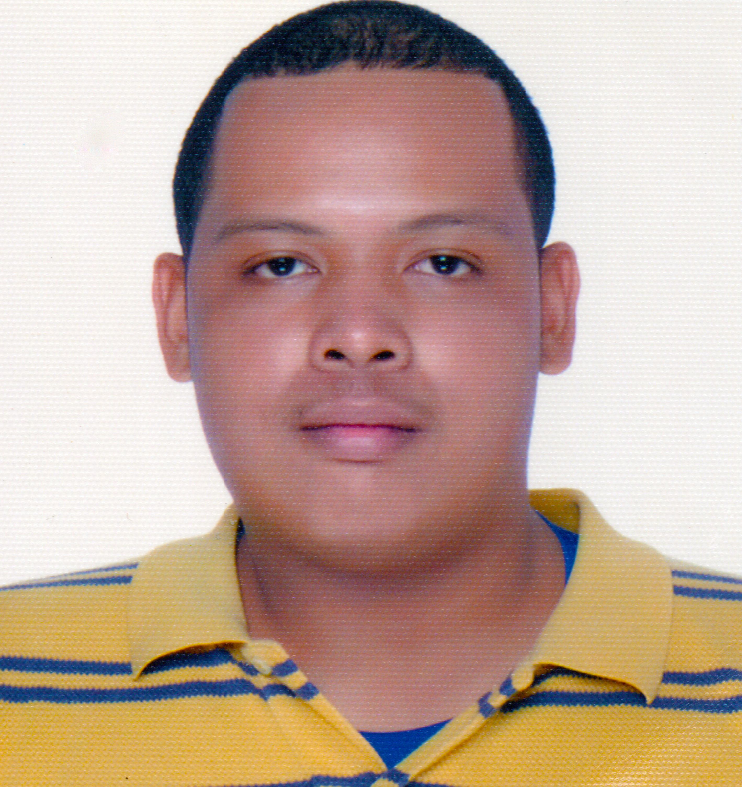

Danny Lim Davis

Core Competencies
- Goal-oriented
- Leadership
- Communication
- Problem-solving
- Management
View all skills here
Work Experience
Operations Coordinator
August 2021 - March 2022
- Produced, led, finalized, and implemented operational projects and opportunities by coordinating with staff, shareholders, and clients.
Coach Manager
November 2020 - August 2021
- Managed and trained coaches to ensure performance of both coaches and agents were satisfactory to the company's and client's expectations.
Training Specialist
February 2020 - November 2020
- Trained new hires to meet the company's standards before inducting them into the production floor.
Voice Agent
October 2019 - February 2020
- Reached out to potential prospects to grant services provided by the company.
Education
- Marketing Management (Incomplete)
Certifications
Credly
- CompTIA A+ ce - CompTIA, 2025
Other